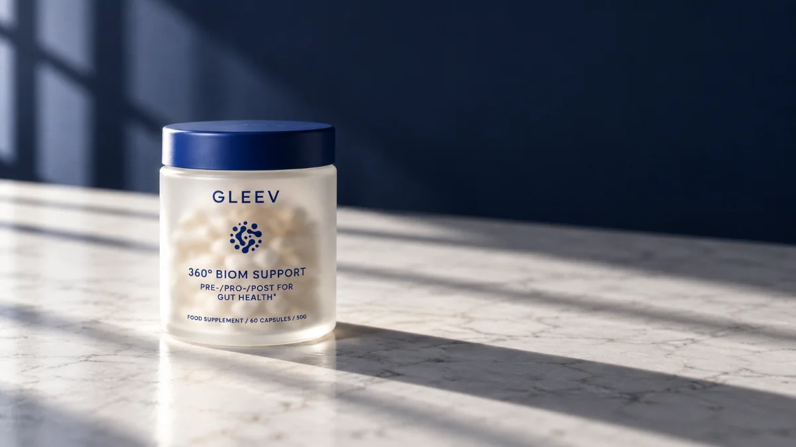
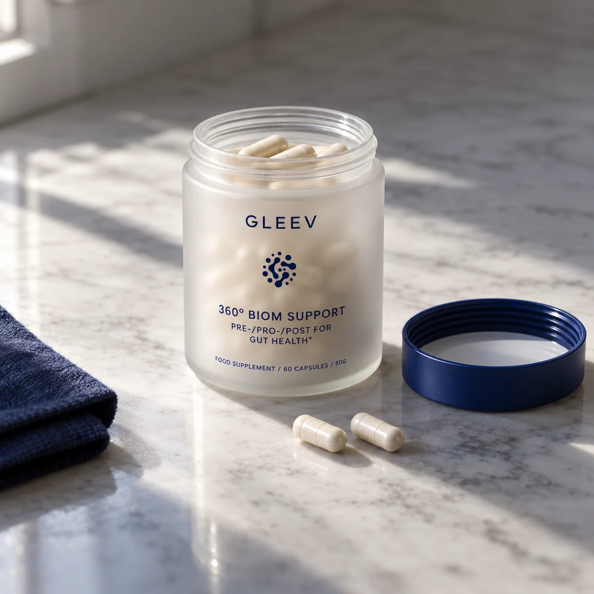
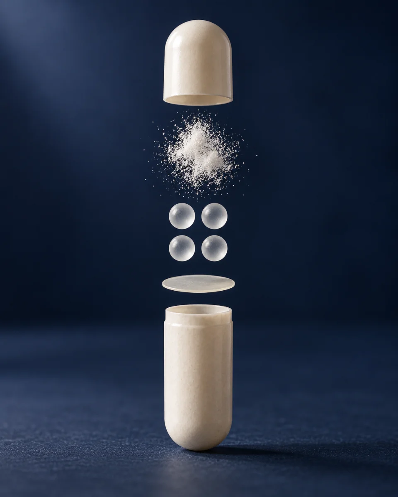
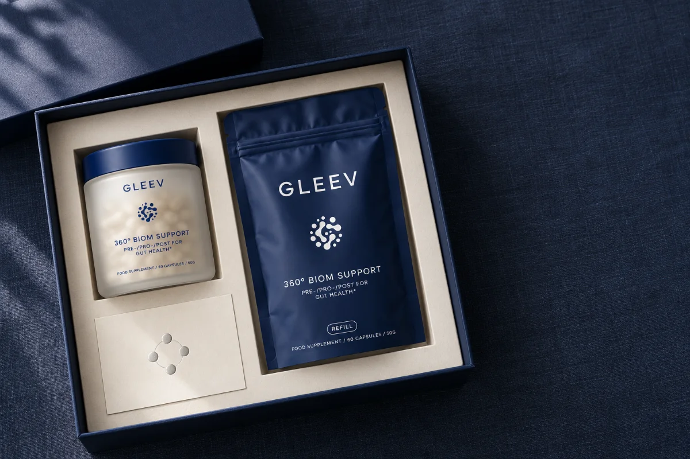
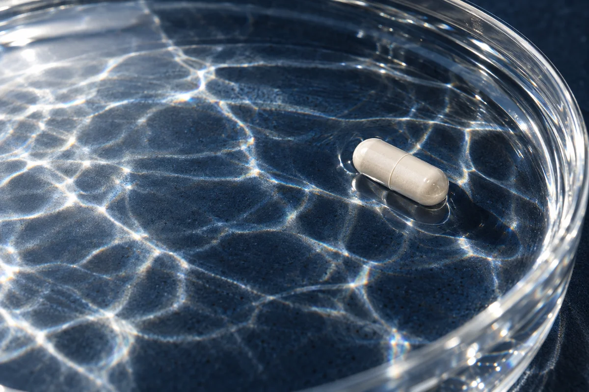
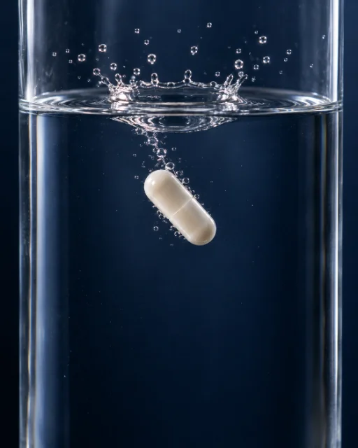

RESILIENCELacticaseibacillus rhamnosus GG
Studied extensively in digestive disruption and antibiotic-associated diarrhoea.




A complete daily microbiome system, combining prebiotic, probiotic, postbiotic and delayed-release delivery to support digestive comfort, regularity and a balanced gut.
.

What a healthier gut means for you, before a single ingredient.
Your gut needs more than bacteria dropped into it.
Gleev doesn't just add bacteria. It supports the environment they live in.
A prebiotic fibre reaches your colon largely undigested.
Resident microbes, especially Bifidobacteria, break it down.
Their by-products help support your intestinal environment and normal bowel function.
Microbes turn prebiotic fibre into compounds your gut uses to support its intestinal environment.
Studied extensively in digestive disruption and antibiotic-associated diarrhoea.
Research spans bowel movement, constipation, abdominal discomfort and digestive symptoms.
Linked in human research to bowel function, IBS symptoms, bloating and microbial metabolism.
Studied across bloating, stool consistency, bowel regularity and abdominal symptoms.
It isn't only how many bacteria are inside. It's why each one is there.
Research described is at species level, as summarised in the Gleev scientific dossier.Your stomach isn't where probiotics are meant to do their job.
Protect them through the stomach. Release them where they can matter.
Pharma-grade delayed-release cellulose capsule, GMP manufactured. In testing it stayed intact for over 60 minutes in 0.1 M hydrochloric acid (about pH 1) across seven commercial batches. A living stomach is more dynamic than a test vessel; the result shows resistance to a defined acid challenge.
Built from gastrointestinal science first. Branding came second.

"Typical probiotic-only formula" means a supplement whose formula is live probiotic bacteria alone. Attributes vary between products.
Choose your planBoth subscriptions are compared with the one-time price.
. Nothing hidden.